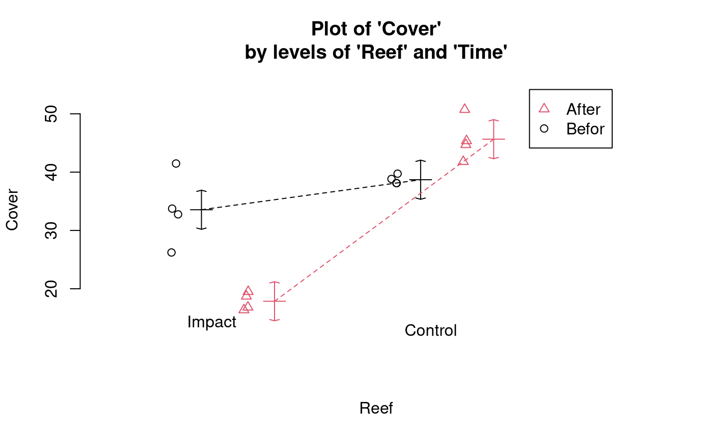
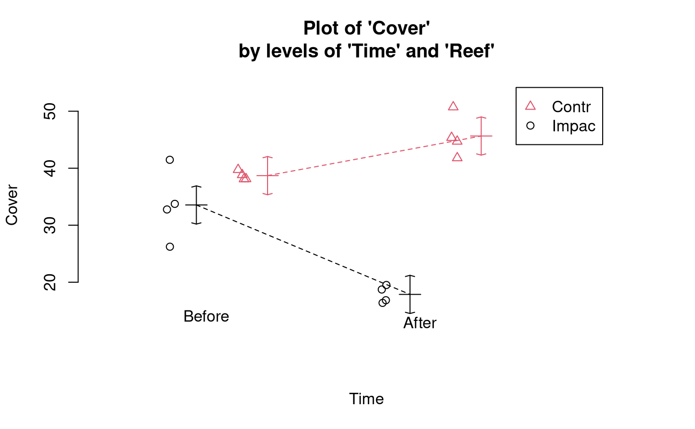
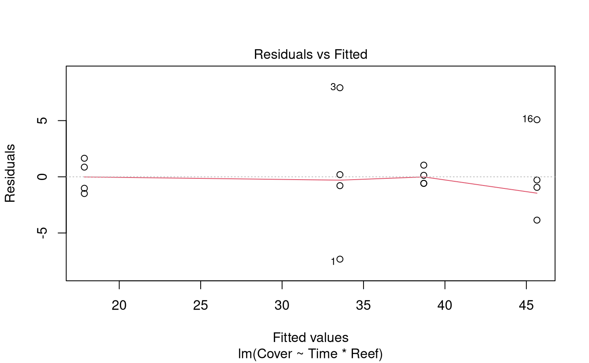
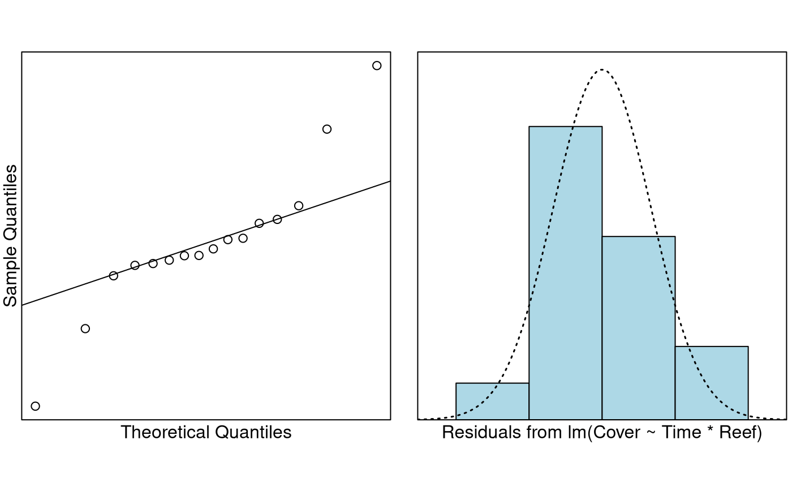

Case Study 12.2: Impact of a cyclone on coral reefs
Source:vignettes/articles/CS12_2.Rmd
CS12_2.RmdProblem
The Australian Institute of Marine Science monitors coral and fish assemblages along the Great Barrier Reef. These data consist of percentage cover of hard corals recorded from underwater video transects from various reef sites. In 1997, parts of the reef were affected by tropical cyclone “Justin”. We wish to investigate the impact of the cyclone on coral cover.
Source of data: Anderson, M.J. and Thompson, A.A. (2004). Multivariate control charts for ecological and environmental monitoring. Ecological Applications 14: 1921-1935.
This type of design is called a BACI design, for
before-after, control-impact. One factor is
Time with two levels: Before and
After. The other factor is Reef (or
Site) with two levels: Control and
Impact. An interaction would imply that the trend in coral
cover over time differed between control sites and impacted sites. Here,
the sites classified as impacted were outer reefs which
take the brunt of any storms.
The variables of interest were:
-
Cover: percentage cover of hard corals in the reef. -
Reef: a two-level factor with levelsControlandImpact. -
Time: a two-level factor with levelsBeforeandAfter.
Read in and Inspect the Data
Reef.df = read.csv("Reef.csv")
Reef.df = transform(Reef.df, Reef = factor(Reef), Time = factor(Time))
interactionPlots(Cover ~ Reef + Time, data = Reef.df)
# Also look at the interaction plot the other way around:
interactionPlots(Cover ~ Time + Reef, data = Reef.df)
The trend in coral cover over time appears to differ for impacted and
control reefs. The cover appears fairly similar in both reef categories
before Cyclone Justin. However, for control reefs, the cover increased
after the cyclone, whereas for impacted reefs, it decreased. From the
highly non-parallel appearance of the coloured lines we suspect there is
an interaction between the Time and Reef
predictors.
Model Building and Check Assumptions

normcheck(Cover.fit)
cooks20x(Cover.fit)
anova(Cover.fit)## Analysis of Variance Table
##
## Response: Cover
## Df Sum Sq Mean Sq F value Pr(>F)
## Time 1 76.46 76.46 5.4834 0.03727 *
## Reef 1 1085.24 1085.24 77.8318 1.362e-06 ***
## Time:Reef 1 512.84 512.84 36.7802 5.631e-05 ***
## Residuals 12 167.32 13.94
## ---
## Signif. codes: 0 '***' 0.001 '**' 0.01 '*' 0.05 '.' 0.1 ' ' 1
summary(Cover.fit)##
## Call:
## lm(formula = Cover ~ Time * Reef, data = Reef.df)
##
## Residuals:
## Min 1Q Median 3Q Max
## -7.3283 -0.9609 -0.4308 0.9049 7.9257
##
## Coefficients:
## Estimate Std. Error t value Pr(>|t|)
## (Intercept) 45.651 1.867 24.451 1.32e-11 ***
## TimeBefore -6.951 2.640 -2.633 0.0219 *
## ReefImpact -27.795 2.640 -10.527 2.05e-07 ***
## TimeBefore:ReefImpact 22.646 3.734 6.065 5.63e-05 ***
## ---
## Signif. codes: 0 '***' 0.001 '**' 0.01 '*' 0.05 '.' 0.1 ' ' 1
##
## Residual standard error: 3.734 on 12 degrees of freedom
## Multiple R-squared: 0.9092, Adjusted R-squared: 0.8864
## F-statistic: 40.03 on 3 and 12 DF, p-value: 1.583e-06Pairwise comparisons using emmeans
Cover.pairs <- pairs(emmeans(Cover.fit, ~ Time * Reef), infer = TRUE)
# Simplify the display:
displayPairs(Cover.pairs, c("Before", "After"), c("Control", "Impact"))## Note: displayPairs is a s20x function that displays only the within-level
## comparisons from allpairs. To see all comparisons, inspect the allpairs
## output directly.
##
## $Before
## contrast est lwr upr pval
## Before Control - Before Impact 5.1485 -2.690584 12.98758 0.2593307
##
## $After
## contrast est lwr upr pval
## After Control - After Impact 27.7945 19.95542 35.63358 1.079047e-06
##
## $Control
## contrast est lwr upr pval
## After Control - Before Control 6.951 -0.8880843 14.79008 0.0886507
##
## $Impact
## contrast est lwr upr pval
## After Impact - Before Impact -15.695 -23.53408 -7.855916 0.0003413045Methods and Assumption Checks
We have a numeric response, Cover, and two explanatory
factors, Reef and Time, so we fitted a two-way
ANOVA model with interaction between Reef and
Time. The interaction term was significant (P-value <
0.001) so it was retained.
The assumption checks were reasonable, except for the Cook’s distance which exceeded 0.4 for a couple of points. However, this was not of great concern, since there were no obvious outliers. It is not surprising that some data points will have high influence when there are only 16 observations in the dataset.
Our final model was where and are the dummy variables that take the value 1 if observation was respectively recorded before Cyclone Justin and in an impacted reef site, otherwise 0; and .
Alternatively, our final model could be written as where denotes the coral cover for observation in time category and reef category , and where is the overall mean percentage cover of the reefs, is the effect of time category , is the effect of reef category , is the interaction effect for the combination of time category and reef category , and .
Our model explained 91% of the variation in the coral cover measurements.
Executive Summary
We aimed to investigate the effect of Cyclone Justin on coral cover in impacted reef sites.
There was no evidence of a difference in the average amount of coral cover between impacted sites and control sites before Cyclone Justin. However, there was strong evidence of a difference after the cyclone.
We estimate that the average coral cover in impacted reefs was between 8 and 24 percentage points lower after the cyclone than before. By comparison, there was no loss in the average coral cover in control reefs (in fact, there was weak evidence of an increase).
After the cyclone, we estimate that the average coral cover was between 20 and 36 percentage points greater in control reefs than in impacted reefs.